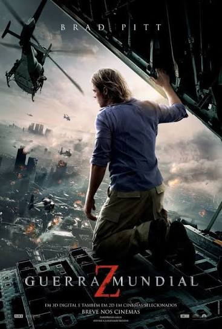
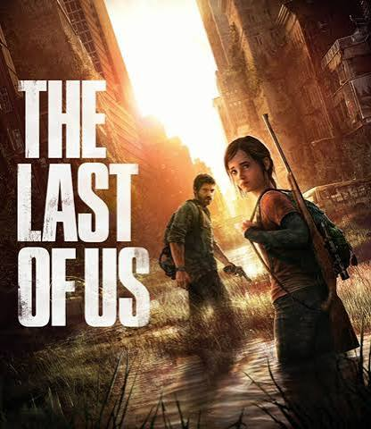
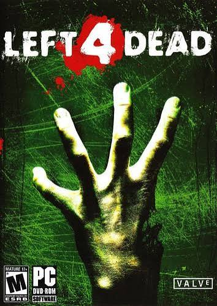

Depois disso, os zumbis ganharam fama e foram se espalhando por toda a cultura pop, aparecendo em filmes, séries, jogos, livros e quadrinhos. Séries como "The Walking Dead", filmes como




Cada obra apresenta suas próprias regras: alguns zumbis são inteligentes, outros são lentos ou rápidos, alguns são resultado de vírus ou parasitas e outros são simplesmente mortos que voltam à vida. Nos jogos, esse conceito funciona
muito bem, pois cria situações de sobrevivência e aumenta a imersão do jogador.